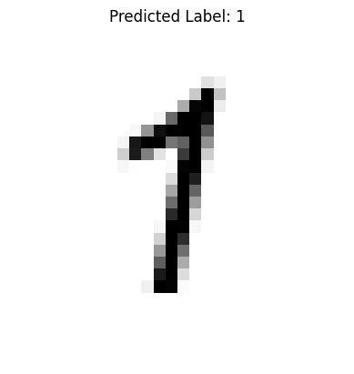
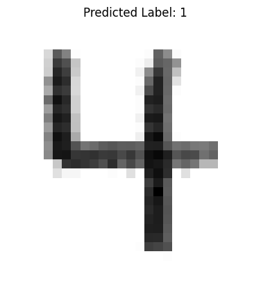
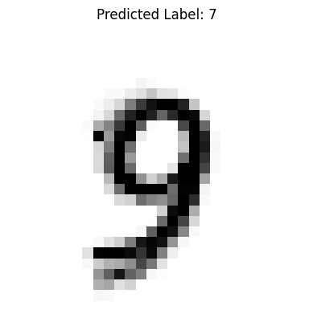

14.2 Artificial Neural Network using Packages#
In this section, we transition from a homebrewed neural network to one built using the PyTorch framework — a widely used, scriptable, and locally installable tool for machine learning and deep learning.
While our implementation uses PyTorch, the following references provide helpful context on building neural networks both with and without high-level libraries. They’re useful for understanding what frameworks like PyTorch automate behind the scenes:
Readings#
MNIST Classifier using PyTorch (Flat ANN)#
This notebook replicates the original homebrew neural network using PyTorch for improved reliability and structure. It is designed to run standalone on a local system without reliance on cloud services.
PyTorch Documentation Landing Page
Load the Various Libraries#
Note
PyTorch must be installed in your Python kernel before running this notebook. On my server, I used the following commands:
ubuntu@ip-172-26-5-168:~$ sudo -u sensei mkdir -p /home/sensei/tmp # create temporary directory
ubuntu@ip-172-26-5-168:~$ sudo TMPDIR=/home/sensei/tmp sudo /opt/jupyterhub/bin/python3 -m pip install torch # download and build in the temporary directory
This approach was necessary because my server is disk-space constrained — it hosts multiple course webroots, each with a .git directory, so storage is tight. On your own machine, a simple pip install torch or the conda equivalent should work just fine.
%reset -f
import gc
gc.collect() # remove orphan objects
# Should be a clean environment
import torch
import torch.nn as nn
import torch.optim as optim
from torch.utils.data import Dataset, DataLoader
import numpy as np
import pandas as pd
import os
import requests
import matplotlib.pyplot as plt
Retrieve the Remote Data#
The dataset is already stored locally from a prior example, but it’s good practice to keep the download function in place. It’s designed to handle pre-existing files gracefully and won’t re-download unnecessarily — a small detail that makes the workflow more robust and reusable.
# Dataset retrieval (local server)
def download_file(url, filename):
if not os.path.exists(filename):
r = requests.get(url, allow_redirects=True)
with open(filename, 'wb') as f:
f.write(r.content)
print(f"Downloaded: {filename}")
else:
print(f"File already exists: {filename}")
train_url = "http://54.243.252.9/engr-1330-psuedo-course/CECE-1330-PsuedoCourse/6-Projects/P-ImageClassification/mnist_train.csv"
test_url = "http://54.243.252.9/engr-1330-psuedo-course/CECE-1330-PsuedoCourse/6-Projects/P-ImageClassification/mnist_test.csv"
train_file = "mnist_train.csv"
test_file = "mnist_test.csv"
download_file(train_url, train_file)
download_file(test_url, test_file)
File already exists: mnist_train.csv
File already exists: mnist_test.csv
Dataset Definition using torch.utils.data.Dataset#
Instead of reading and preprocessing data inside the training loop (as in our homebrew), PyTorch encourages separating data loading logic using the torch.utils.data.Dataset interface.
Here’s how to define a dataset class for our MNIST CSV files:
# Define custom dataset for MNIST CSV
class MNISTDataset(Dataset):
def __init__(self, csv_file):
data = pd.read_csv(csv_file, header=None).to_numpy(dtype=np.float32)
self.X = data[:, 1:] / 255.0 # normalize inputs
self.y = data[:, 0].astype(np.int64)
def __len__(self):
return len(self.y)
def __getitem__(self, idx):
return torch.tensor(self.X[idx]), torch.tensor(self.y[idx])
This class allows PyTorch’s DataLoader to efficiently:
Load data in mini-batches
Shuffle training samples
Handle large datasets that don’t fit in memory
Note
Our dataset is already small and preloaded as a CSV, so we read everything at once. In larger applications, the __getitem__() method might read from disk one image at a time.
# Load datasets
batch_size = 64
train_dataset = MNISTDataset(train_file)
test_dataset = MNISTDataset(test_file)
train_loader = DataLoader(train_dataset, batch_size=batch_size, shuffle=True)
test_loader = DataLoader(test_dataset, batch_size=batch_size, shuffle=False)
Model Architecture: nn.Sequential vs Custom Class#
In PyTorch, a neural network model is typically defined as a subclass of torch.nn.Module. This lets you encapsulate the structure (layers) and the logic (forward pass) of your network in one place.
In our example, we create a SimpleANN class:
# Define the neural network architecture
class SimpleANN(nn.Module):
def __init__(self, input_nodes=784, hidden_nodes=100, output_nodes=10):
super(SimpleANN, self).__init__()
self.model = nn.Sequential(
nn.Linear(input_nodes, hidden_nodes),
nn.Sigmoid(),
nn.Linear(hidden_nodes, output_nodes),
nn.Sigmoid() # consistent with original homebrew
)
def forward(self, x):
return self.model(x)
Why use nn.Sequential?#
nn.Sequential is a container that applies a list of layers in order. It simplifies the model definition when layers are used one after another (i.e., no branching, recurrence, or multiple inputs/outputs).
This model is a “flat fully connected network”, meaning each layer receives all outputs from the previous one — exactly like our homebrew network.
Tip
If we ever need more complex architectures (e.g. skip connections, multiple branches), we can still use nn.Module, but define the forward pass manually without nn.Sequential.
# Initialize model, loss, and optimizer
model = SimpleANN()
loss_function = nn.MSELoss() # similar to original
optimizer = optim.SGD(model.parameters(), lr=0.1)
Training Loop#
Our training loop follows a standard PyTorch structure:
# Train the model
epochs = 5
for epoch in range(epochs):
total_loss = 0
for inputs, labels in train_loader:
targets = torch.zeros((inputs.size(0), 10))
targets[range(inputs.size(0)), labels] = 0.99 # mimic original encoding
outputs = model(inputs)
loss = loss_function(outputs, targets)
optimizer.zero_grad()
loss.backward()
optimizer.step()
total_loss += loss.item()
print(f"Epoch {epoch+1}, Loss: {total_loss:.4f}")
Epoch 1, Loss: 85.1594
Epoch 2, Loss: 81.1760
Epoch 3, Loss: 79.7172
Epoch 4, Loss: 77.2456
Epoch 5, Loss: 73.2352
Let’s walk through what happens:
Each inputs batch is a tensor of shape
[batch_size, 784], and labels is[batch_size].We convert labels into one-hot-like targets scaled from 0.01 to 0.99 to match our sigmoid output range.
The model produces predictions using the
forward()method.The loss (difference between prediction and target) is computed using
nn.MSELoss()to match the homebrew logic.MSELossis generally used for regression, but we use it here to mirror the output layer logic of the original model. In classification tasks,CrossEntropyLossis more typical.optimizer.zero_grad()clears gradients from the last update.loss.backward()computes gradients using backpropagation.optimizer.step()updates the weights using gradient descent.
Tip
PyTorch automatically handles the chain rule and gradient accumulation under the hood. You do not need to manually compute derivatives or update weight matrices like in the homebrew version.
# Evaluate accuracy
correct = 0
total = 0
with torch.no_grad():
for inputs, labels in test_loader:
outputs = model(inputs)
predictions = torch.argmax(outputs, dim=1)
correct += (predictions == labels).sum().item()
total += labels.size(0)
accuracy = correct / total
print(f"Test Accuracy: {accuracy:.2%}")
Test Accuracy: 50.39%
Image Classification using a Trained PyTorch Model#
Now that we have trained our network, we can use it to classify new, unseen images.
The function below wraps the full inference process and replicates the behavior of our earlier homebrew query() method.
import imageio.v2 as imageio # PyTorch prefers Pillow, but this keeps your original structure
import matplotlib.pyplot as plt
import numpy as np
import torch
def classify_and_display_image_pytorch(model, image_path):
"""Classify a new image using the trained PyTorch model and display it."""
# Load grayscale image
img_array = imageio.imread(image_path, mode='F') # float32 output
img_array = np.max(img_array) - img_array # Invert colors (as done in MNIST)
# Normalize and reshape
img_data = (img_array / 255.0 * 0.99) + 0.01
input_tensor = torch.tensor(img_data.flatten(), dtype=torch.float32).unsqueeze(0) # shape: [1, 784]
# Disable gradient tracking for inference
with torch.no_grad():
output = model(input_tensor)
label = torch.argmax(output).item()
# Plot image and prediction
plt.imshow(img_array, cmap='Greys')
plt.title(f"Predicted Label: {label}")
plt.axis('off')
plt.show()
return label
model: This refers to an instance of our SimpleANN class, which inherits from torch.nn.Module. In the homebrew, the argument was n — a non-informative name for our neural network instance. Using model improves readability and aligns with common practice in PyTorch documentation.
See PyTorch: nn.Module for how models are defined and used.
image_path: A path to a 28×28 grayscale PNG or JPG image that resembles an MNIST digit.
Tip
By changing image_path and its contents, we can adapt the function to handle different types of images. We are not constrained to 28×28 grayscale digits — though we would need to modify preprocessing steps accordingly. If an image is larger, has color channels (RGB), or represents something entirely different, we can refactor the normalization and model input shape to match.
This is one of the strengths of scriptable ML engines: the flexibility to reconfigure the pipeline for new tasks.
Success and Failure Cases#
Below is a demonstration using two test images — one that is classified correctly and one that is not. To a human, the digits 1 and 4 appear distinct, but to the network, they may produce similar output probabilities.
In our example, the misclassified 4 has:
A weak or broken horizontal stroke, and
Closely spaced vertical strokes.
Since our network is fully connected and flat, it treats the image as a list of 784 pixel intensities, losing any spatial context (e.g., where edges or corners occur). This limitation makes it vulnerable to errors that a human (who perceives structure and layout) would not make.
Note
This is a known limitation of flat networks. A Convolutional Neural Network (CNN) is one way to restore spatial awareness by applying learnable filters that detect edges, shapes, and textures in local neighborhoods of the image. CNNs are the standard architecture for image classification tasks.
classify_and_display_image_pytorch(model, "./image_src/MyOne.png")

1
classify_and_display_image_pytorch(model, "./image_src/MyFour.png")

1
In the function definition there is a lot going on here is a summary:
We used
imageioto load the image into a NumPy array. The mode=’F’ flag ensures the image is read as 32-bit floating point grayscale.Inversion is applied to match MNIST conventions: handwritten digits are light on a dark background, but MNIST uses dark digits on a light background.
Normalize input to a range close to (0, 1), but not exactly zero, just like our training set.
PyTorch expects input in similar scaled ranges, although batch normalization layers can handle raw pixels if desired in future versions.
Convert the NumPy array to a torch.tensor with type float32.
flatten()reduces the 28×28 image to a 784-element vector.unsqueeze(0)adds a batch dimension so that the input shape becomes [1, 784], which is required by PyTorch models even for single predictions.The
torch.no_grad()context disables gradient tracking, which saves memory and speeds up inference.The model returns a 10-element output vector, corresponding to the predicted activation for each digit class.
torch.argmax()selects the index of the highest activation — this is our predicted label..item()converts the scalar tensor into a plain Python integer.The image is displayed using
matplotlib, and the predicted label is shown in the title.We turn off axes for a cleaner presentation.
Exporting and Loading Trained Models#
Once a model is trained, you can save it to disk and reload it later for prediction without retraining:
Save a Model#
torch.save(model.state_dict(), "mnist_ann_weights.pth")
Load a Saved Model#
model = SimpleANN()
model.load_state_dict(torch.load("mnist_ann_weights.pth"))
model.eval() # Set to inference mode (disables dropout, etc.)
SimpleANN(
(model): Sequential(
(0): Linear(in_features=784, out_features=100, bias=True)
(1): Sigmoid()
(2): Linear(in_features=100, out_features=10, bias=True)
(3): Sigmoid()
)
)
state_dict() is a Python dictionary mapping each layer’s parameters.
This approach is lightweight and flexible — you must reconstruct the model architecture in code before loading weights.
For full-model export (including class structure), you could use torch.save(model), but it’s less portable across PyTorch versions.
Note
Always call model.eval() after loading if you’re using the model for inference. This ensures the behavior of layers like dropout or batch norm is appropriate for evaluation.
classify_and_display_image_pytorch(model, "./image_src/MyNine.png")

7